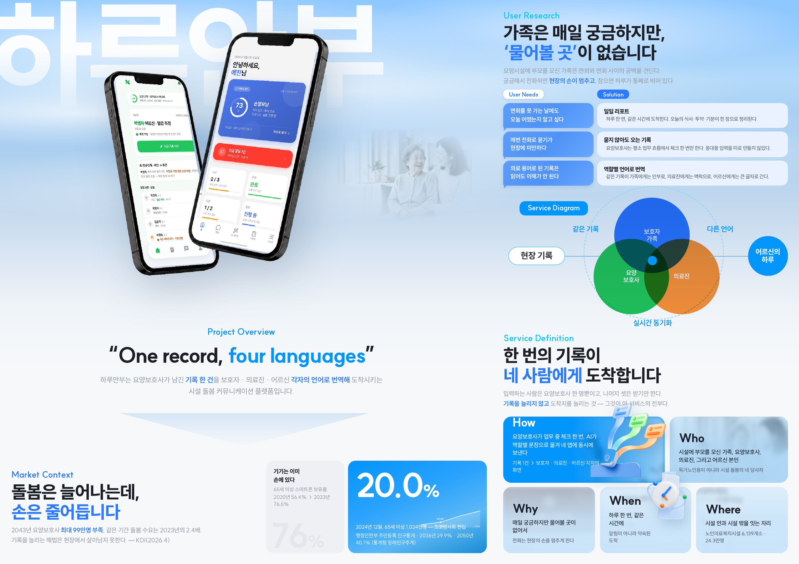
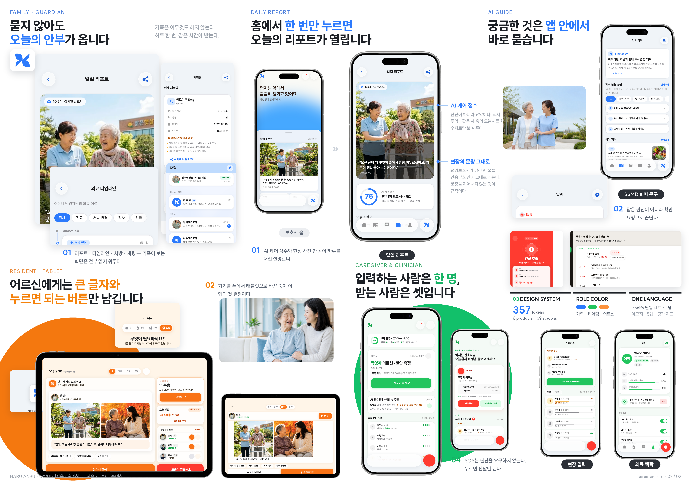
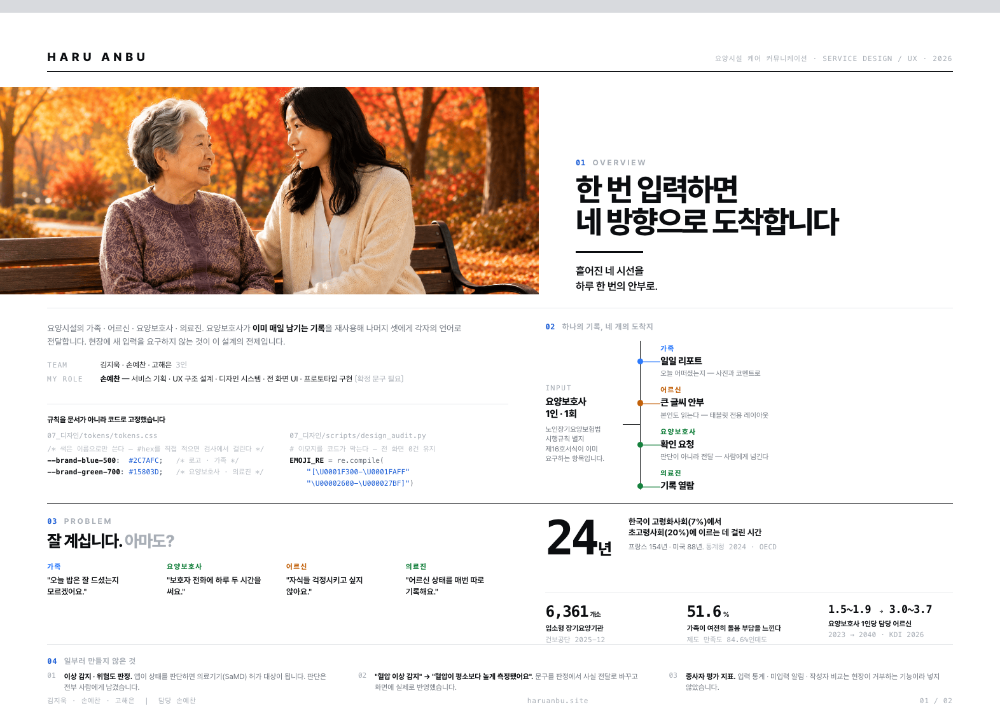
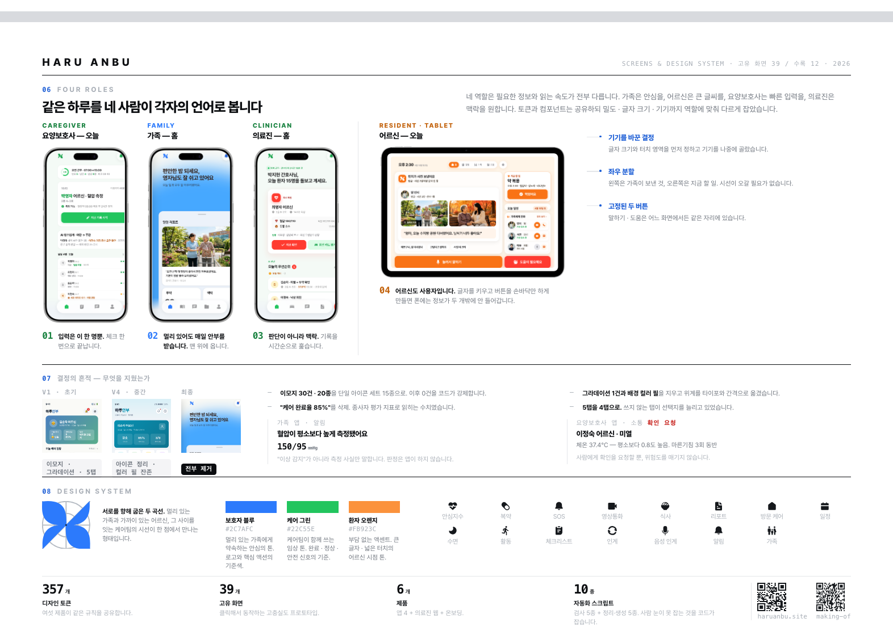
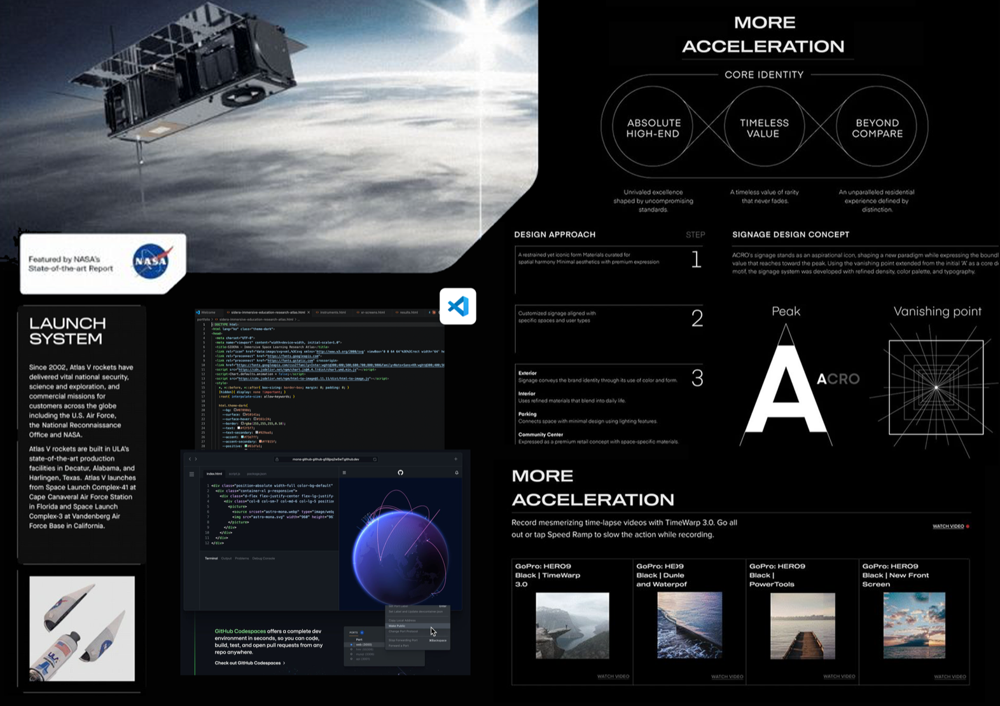
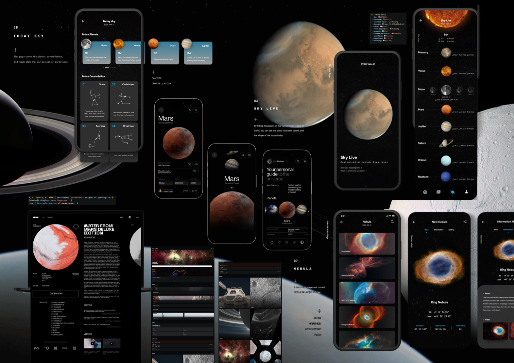
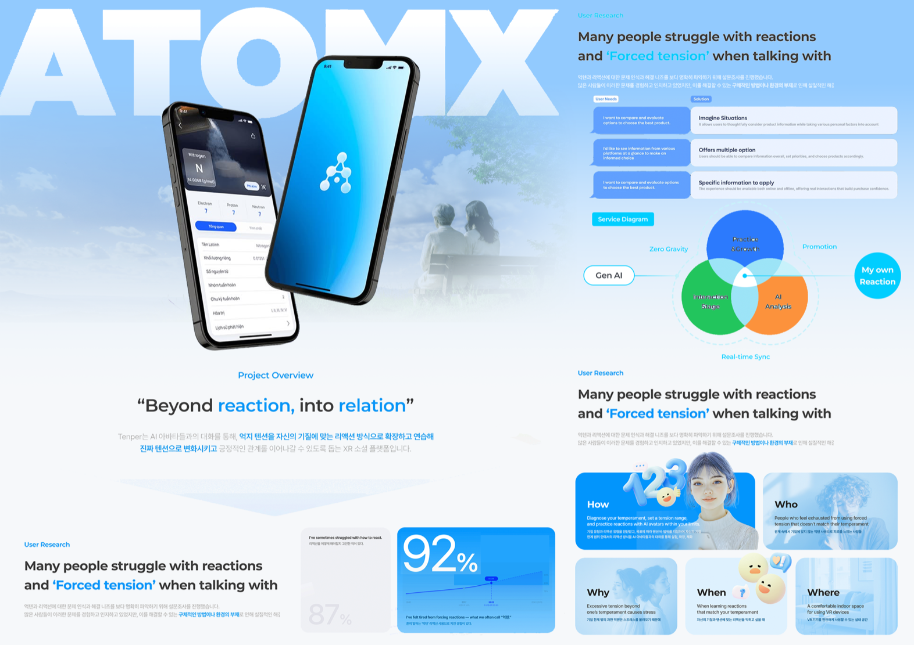
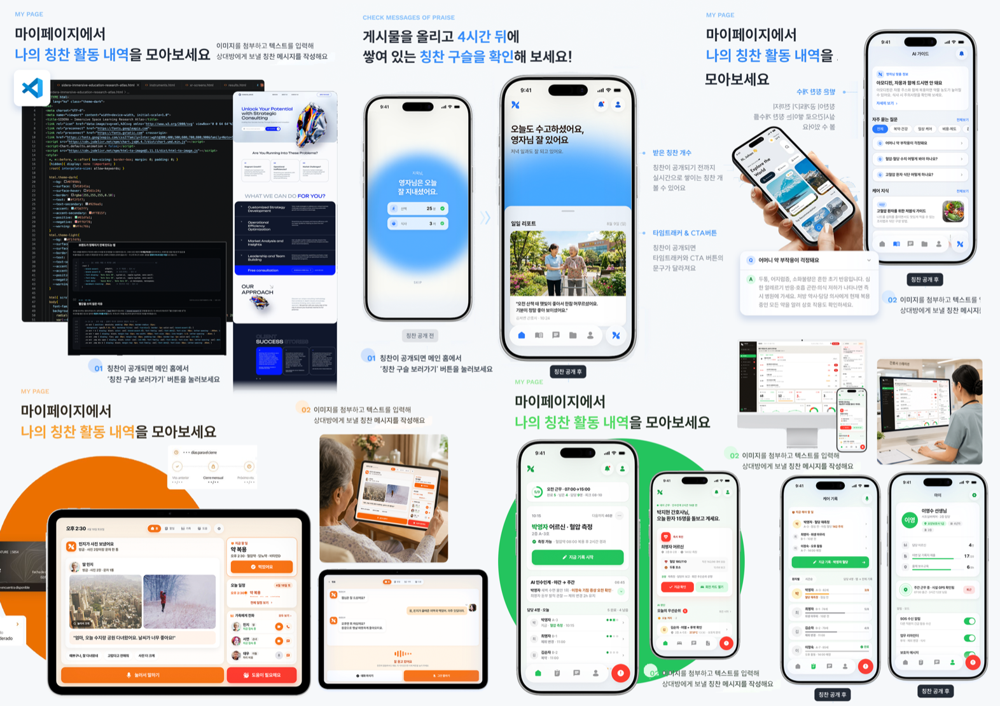

제작 중인 패널 두 판
같은 내용을 두 가지 판형으로 만들어 두었습니다. ATOMX판이 현재 작업본이고, 흰 에디토리얼판은 기획서 원안대로 만든 대조본입니다. 아직 어느 쪽으로 갈지 결정하지 않았습니다.
ATOMX판
현재 작업본 · 레퍼런스 판형 복제
보드 1 — 왜 이렇게 설계했는가
User Research · Needs↔Solution 3행 대응표 · Service Diagram 벤 3원 · 5W 카드 · Market Context

보드 2 — 무엇을 만들었나
보호자 · 어르신 · 케어팀 4역할 화면 18점 · 지시선 콜아웃 · 번호 시퀀스 · 상태 칩
라이브 HTML 안의 화면은 스크린샷이 아니라 실제 앱이 iframe 으로 돌아갑니다. 처음 로드에 몇 초 걸립니다.
흰 에디토리얼판
기획서 원안 · 대조본
보드 1
흰 바탕 · 박스 없음 · 위계는 타이포와 여백으로만

보드 2
같은 원칙의 화면·시스템 판
- ATOMX판은 하늘 그라데이션·컬러 카드를 의도적으로 씁니다 — 프로젝트 상시 규칙(그라데이션·배경 컬러 필 금지)과 어긋납니다.
- 흰 에디토리얼판은 규칙을 지키지만 레퍼런스의 밀도·화려함이 없습니다.
- 어느 쪽을 최종으로 갈지, 혹은 ATOMX 골격에 흰 바탕을 입힐지.
레퍼런스 원본 4장
카톡으로 받은 판형 레퍼런스입니다. 네 장 모두 3507×2480px = A4 가로 297×210mm @300dpi —
우리 판형과 정확히 같아서 px ÷ 300 × 72 = pt 로 원본 수치를 그대로 옮겨올 수 있었습니다.
NASA — Pocket Mission Control
2026-08-11 · 직접 만든 판 · 1차 레퍼런스 · Figma iNt51HokozrSYHr5ElRZqc
패널 A — 개념 · 결정 · 시스템판 node 1-5
좌상단 풀블리드 실사 + 흰 명패 카드 · 초대형 타이틀 · CORE IDENTITY 3원(× 곱셈) · 미션 브리프 + 스펙표 · 코드 에디터 콜라주 · DESIGN APPROACH 1·2·3 · 소실점 A 작도 · 하단 탭 카드 4장. 패널 기획의 규칙 12개가 여기서 나왔습니다.

패널 B — 화면 갤러리판 node 1-9
Today Sky / Sky Live / Nebula. 배경 실사 위 폰 목업 10대 + UI 조각을 느슨한 대각선으로. 섹션 마커는 번호 + 초광폭 자간 영문 + 2행 설명만, 상자·선 없음.
ATOMX 세트
2026-08-14 · 판형을 실제로 복제한 2차 레퍼런스
ATOMX-01 — 개요·리서치판
XR 소셜 플랫폼 "Tenper" / 프로젝트명 ATOMX. 고스트 워드마크 · 기울인 폰 2대 · Needs→Solution 2열 대응표 · 벤 3원 · 92% 초대형 수치 · 5W 카드 그리드

ATOMX-02 — 화면 갤러리판 (하루안부 배치 WIP)
같은 템플릿 둘째 장인데 이미 하루안부 화면이 들어가 있는 작업 중 상태. 헤드라인 카피는 원본 템플릿("칭찬 구슬", "칭찬 공개 전/후")이 그대로 남아 있습니다.
원본 대조
같은 폭으로 나란히 놓았습니다. 왼쪽이 우리 판, 오른쪽이 따라간 원본입니다.
보드 1
개요·리서치판- 고스트 워드마크 · 기울인 폰 2대 · 하늘 배경 · 인물 워터마크
- Needs→Solution 대응표(원본 3행 그대로)
- Service Diagram 벤 3원 + 좌우 pill/circle 연결선
- 초대형 수치 + 라인차트 · 5W 카드 그리드 · 중앙 정렬 히어로 문장
보드 2
화면 갤러리판- 지시선 콜아웃 · 번호 시퀀스 캡션 · 상태 칩 · 컬러 블롭 군집
- 번호 캡션의 번호 색이 그 군집의 역할색을 따라가는 규칙
- 웹 대시보드 · 실사 사진을 폰 사이에 섞어 리듬을 만드는 배치